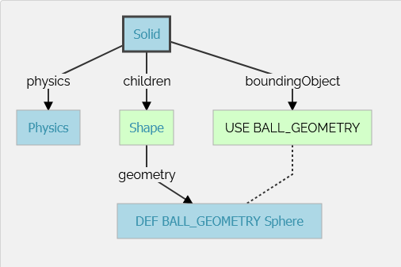

Tutorial1 <<
Previous Next >> Stage2
Tutorial2
導引課程 2：修改環境
在本導引課程中，我們將教您如何在環境中創建簡單的物件。第一步將是創建一個與環境互動的球。我們將處理與節點相關的幾個概念：它們的含義是什麼，如何創建它們，它們如何必須隸屬等等。此外，我們還將看到如何設置物理效果。
將介紹幾種節點類型。它們的詳細定義可以在參考手冊中找到。將節點圖表放在您面前，將有助於理解節點的繼承關係。
一個新的模擬
首先，我們基於教程 1 中創建的模擬來創建一個新的模擬。
實作 #1：確保 my_first_simulation.wbt 世界文件已打開，並且模擬已暫停且虛擬時間為 0。使用 File / Save World As... 菜單將模擬保存為 obstacles.wbt。
修改地板
內定的 RectangleArena PROTO 定義了一個簡單的地板，固定在靜態環境中，沒有物理節點，四周則被牆壁包圍。Webots 物件庫中還有其他預製的地板。我們現在將刪除 RectangleArena 節點，並添加一個簡單的地板，稍後在本教程中我們將手動用牆壁圍繞它。
實作 #2：要刪除 RectangleArena，請在 3D 視圖或場景樹視圖中選中它，然後按鍵盤上的 del 鍵。或者，您可以在 3D 視圖中右鍵單擊它，然後在上下文菜單中選擇 Delete（您也可以直接在場景樹視圖中使用上下文表單）。選擇 TexturedBackgroundLight 節點並點擊添加按鈕。在打開的對話框中，選擇 PROTO nodes (Webots Projects) / objects / floors / Floor (Solid)。
新添加的 Floor PROTO 默認大小為 10 米 x 10 米，但可以通過更改相應的欄位 (field) 來調整其大小、位置和紋理。
實作 #3：在場景樹視圖中選擇並展開 Floor。修改 size 欄位並將其設置為 {1, 1} 以將其調整為 1 米 x 1 米。
Solid 節點
本小節介紹了 Webots 中最重要的基礎節點：Solid 節點，許多其他節點都從它衍生而來。
Solid 節點代表剛體，即可以忽略變形的物體。剛體中任意兩點之間的距離無論外力如何作用，都保持恆定。例如桌子、機器人手指骨節或輪子都是剛體。軟體和關節物體不是剛體。例如繩子、輪胎、海綿或關節機器人手臂都不是剛體。然而，一個關節實體可以被分解成若干剛體。
Webots 的物理引擎設計用於模擬剛體。設計模擬時，一個重要的步驟是將各種實體分解為單獨的剛體。
要定義剛體，您需要創建一個 Solid 節點。在此節點內，您將設置對應於剛體特性的不同子節點。下圖描述了一個剛體及其子節點。Solid 節點的圖形表示由填充其子級列表的形狀節點定義。碰撞範圍在其 boundingObject 欄位中定義。圖形表示和碰撞形狀通常但不必然相同。最後，physics 欄位定義物體屬於動態環境還是靜態環境。所有這些子節點都是可選的，但 physics 欄位設定時，需要同時定義 boundingObject。

在 Webots 中，最簡單的剛體模型具有幾何外形圖示 (以 Shape 中的 Geometry 標示其視覺外形)、物理邊界形體 (以 boundingObject 中的 Geometry 標示其碰撞檢測外形) 並處於動態環境 (以 physics 中的 Physics 標示其物理特性參數) 中。
圖中的幾何框代表任何類型的幾何原始體。事實上，它可以被替換為球體、盒子、圓柱體等。
創建一個球
我們現在將在模擬中添加一個球。該球將被建模為剛體，如下圖所示。我們將使用 Sphere 節點來定義我們球的幾何形狀。
實作 #4：在場景樹視圖中，選擇最後一個節點並按「Add」按鈕。在對話框中，打開「Bases nodes」部分並選擇「Solid」節點。在場景樹視圖中，展開「Solid」節點並選擇其「children」欄位。使用「Add」按鈕向其添加一個「Shape」節點。選擇「Shape」節點的「appearance」欄位，並使用「Add」按鈕添加一個「PBRAppearance」節點。
添加一個「Sphere」節點作為新創建的「Shape」節點的幾何欄位。
展開「PBRAppearance」節點，將其「metalness」欄位更改為 0，並將其「roughness」欄位更改為 1。
向「Solid」的「boundingObject」欄位添加另一個「Sphere」節點。
最後，向「Solid」的「physics」欄位添加一個「Physics」節點。
通過修改「Solid」節點的「translation」欄位，將球放置在機器人前面（例如在 {0.2, 0, 0.2}）。
保存模擬。
結果如下圖所示。
你的第一個 Webots 剛體
當模擬開始時，球會撞擊地板。您可以通過對球施加力來移動它（ctrl + alt + 左鍵單擊並拖動）。通過啟用 View / Optional Rendering / Show Contact Points 表單項，可以顯示球與地板之間的接觸點作為青色線條。
幾何體
為了定義球，我們在兩個不同的上下文中使用了 Sphere 節點：圖形表示 (graphical representation)（children）和定義物理邊界 (physical bounds)（boundingObject）。所有幾何節點（例如 Sphere 節點）都可以在圖形標示中使用。但是，只有其中的一部分可以在物理標示中使用。節點圖表中則明確指出哪些節點可以用在何種標示。(這裡需要進一步說明各節點的適用情境)
我們現在將縮小球體的尺寸，並通過增加用於表示它的三角形數量來提高其圖形質量。
實作 #5：對於定義球的每個 Sphere 節點，將其 radius 欄位設置為 0.05，將其 subdivision 欄位設置為 2。請參考 sphere 手冊了解 subdivision 欄位的含義。
DEF-USE 機制
DEF-USE 機制允許在一個地方定義一個節點，並在場景樹的其他地方重用該定義。這對於避免在世界文件中重複相同的節點非常有用。此外，它還允許用戶同時修改多個對象。其工作原理如下：首先使用 DEF 字符串標記一個節點。然後可以使用 USE 關鍵字在其他地方重用該節點的副本。只有 DEF 節點的欄位可以編輯，USE 節點的欄位繼承自 DEF 節點，無法更改。此機制依賴於世界文件中節點的順序。DEF 節點應在任何相應的 USE 節點之前定義。
我們之前用來定義球的兩個 Sphere 定義是冗餘的。我們現在將使用 DEF-USE 機制將這兩個 Sphere 合併為一個。
實作 #6：在場景樹視圖中選擇第一個 Sphere 節點（Shape 的子節點）。場景樹視圖的欄位編輯器允許您輸入 DEF 字符串。
在此欄位中輸入 BALL_GEOMETRY。
選擇 boundingObject 欄位（包含第二個 Sphere 節點），通過右鍵單擊該欄位並選擇彈出上下文菜單中的「Delete」條目來清空它。
然後，選擇 boundingObject 欄位並單擊「Add」按鈕，在對話框中選擇 USE / BALL_GEOMETRY。
結果如圖所示。
現在，更改第一個 Sphere 節點的 radius 欄位也會修改其 boundingObject。
為了方便起見，boundingObject 欄位也接受 Shape 節點（而不是直接接受 Sphere 節點）。同樣可以在 Shape 層級使用相同的 DEF-USE 機制，如下圖所示。目前最大的好處是能夠直接將此 Shape 用於圖形目的。稍後此機制對於某些傳感器將非常有用。

在名為 BALL_GEOMETRY 的 Sphere 節點上使用 DEF-USE 機制。

在 Solid 的幾何體的 Sphere 節點上應用 DEF-USE 機制。
實作 #7：創建第二個球，使用相同的參數，但使用 Shape 節點（而不是直接使用 Sphere 節點）來實現 DEF-USE 機制。
添加牆壁
為了驗證您的進展，請自行實現四面牆來圍繞環境。這些牆必須靜態地定義到環境中。為了理解靜態和動態之間的區別，讓我們取一個地面上的定義物體（球）。如果 Physics 節點為 NULL，它將在模擬期間保持靜止在空中（靜態情況）。如果 physics 欄位包含 Physics 節點，它將在重力作用下掉落（動態情況）。
儘量在Shape 層級使用 DEF-USE 機制，而不是在 Geometry 層級。確實，將中間 Shape 節點添加到 Solid 節點的 boundingObject 欄位中更方便。實現牆壁的最佳幾何原語是 Box 節點。所有牆壁只需定義一個 Shape。預期結果如圖所示。
實作 #8：添加四面牆，無需物理效果，並且只使用一個 Shape 節點的定義。
解決方案：世界文件
要將您的世界與解決方案進行比較，請進入您的文件並找到在導引課程1中創建的名為 "my_first_simulation" 的文件夾，然後進入 "worlds" 文件夾並用文本編輯器打開相應的世界文件。此解決方案與其他解決方案位於 solution 目錄中。

在本教程結束時的模擬狀態。
效率
剛體的模擬計算代價高昂。通過最小化邊界對象的數量、最小化它們之間的約束（有關約束的更多信息在後續教程中），以及最大化 WorldInfo.basicTimeStep 欄位，可以提高模擬速度。在每次模擬中，必須在模擬速度和現實感之間找到權衡。
結論
在本教程結束時，您將能夠基於剛體創建簡單的環境。您能夠從場景樹視圖中添加節點並修改其欄位。您已經熟悉了 Solid、Physics、Shape、Sphere 和 Box 節點。您還看到了 DEF-USE 機制，該機制允許減少場景樹的節點冗餘。
Tutorial1 <<
Previous Next >> Stage2